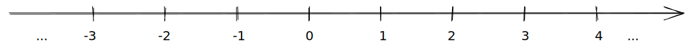
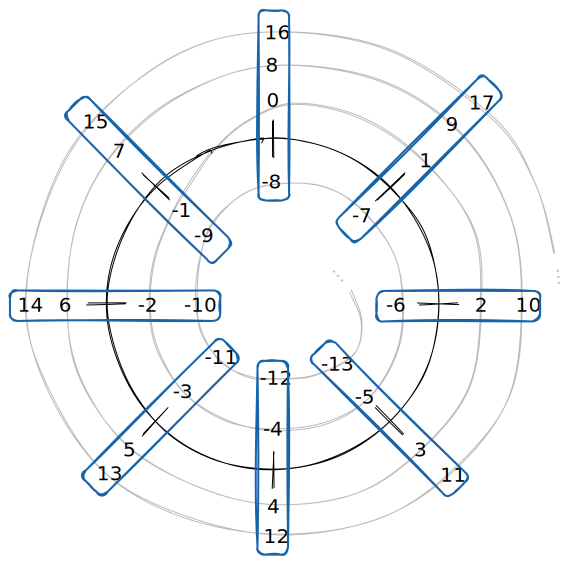

Comprendre la congruence
On sait que les nombres de \(\mathbb{Z}\) peuvent être représentés sur une droite :

De la même manière, on peut représenter les entier modulo \(n\)… sur un cercle !
On va “enrouler” la droite sur elle-même, en mettant au même endroit les nombres qui sont congrus modulo \(n\).
Par exemple, voici le cercle des entiers modulo \(8\) :

Les nombres dans chaque groupe en bleu sont ceux qui sont congrus modulo \(8\). En quelque sorte, ce sont les mêmes nombre dans ce système : on peut les utiliser de la même manière dans une addition, multiplication etc., et le résultat sera le même modulo 8.
Quand on travaille modulo \(n\), la congruence joue le même rôle que l’égalité.
Propriétés
Soit \(a \in \mathbb{Z}\)
\(a \equiv 0 [n]\) si et seulement si \(n \mid a\) (\(a\) est divisible par \(n\))
Comme avec l’égalité classique,
Soit \(n\) un entier strictement positif
Soient \(a\), \(b\) et \(c\) des entiers relatifs
Si \(a \equiv b [n]\) et \(b \equiv c [n]\), alors : \(a \equiv b [n]\)
On connaît cette propriété pour l’égalité : si \(a = b\) et \(b = c\), alors \(a = c\).
Soit \(n\) un entier strictement positif
Soient \(a\), \(A\), \(b\), \(B\) et \(k\) des entiers relatifs
avec \(a \equiv A[n]\) et \(b \equiv B[n]\)
On a :
- \(a + b \equiv A + B [n]\)
- Donc \(a + k \equiv A + k [n]\)
- \(a - b \equiv A - B [n]\)
- Donc \(a - k \equiv A - k[n]\)
- \(ab \equiv AB [n]\)
- Donc \(ak \equiv Ak [n]\)
- \(a^{p} \equiv A^{p}[n]\) (pour tout \(p \in \mathbb{N}\))
En fait, si on a commris que la congruence est une sorte d’égalité quand on est modulo \(n\), toutes ces propriétés sont évidentes.